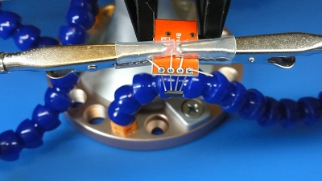
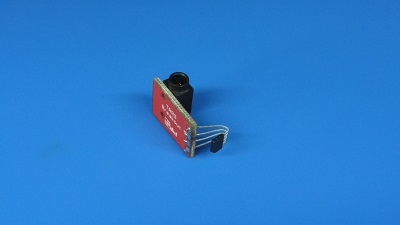
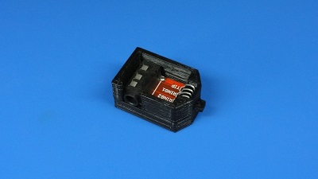
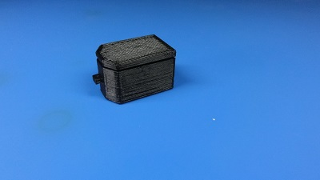
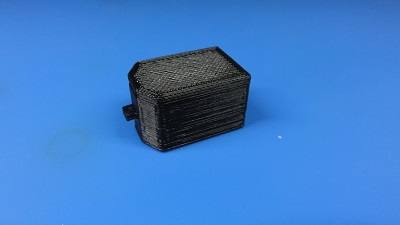
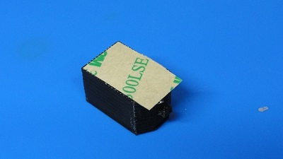
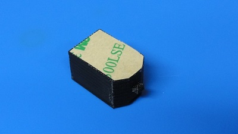

« Previous -
Version 15/16
(diff) -
Next » -
Current version
J. Simmons, 05/05/2018 02:30 am
Sensor Assembly¶
Tools¶
- Holoseat Test Stand with computer to operate it
- Soldering iron with stand
- Helping hands
- Exhaust fan
- Sensor assembly jig (3D printed tool - provide link)
- Flush snips
- Small scissors
- Safety glasses
Materials¶
- Instant/super glue (prefer Loctite Super Glue Ultragel Control)
- Solder
- Isopropyl alcohol
- Cotton balls
- (1) WSSM-01: TRRS Audio Connector PCB
- (1) WSSM-02: TLE4966L Infineon Technologies High Precsn Hall / Board Mount Hall Effect/Magnetic Sensor
- (1) WSSM-03: Sensor Housing Lower Half
- (1) WSSM-04: Sensor Housing Upper Half
- (1) WSSM-05: 3M 9472LE Tape 5/8" x 1" piece
Safety Issues¶
- Care must be taken when using the soldering iron, the tip is very hot
- Always wear safety glasses while working with soldering irons
- Avoid breathing in the soldering fumes, use a vent or hood if needed to provide adequate ventilation
Product¶
HS-04: Wheel Speed Sensor Module
Procedure¶
1. Place sensor on TRRS Audio Connector PCB¶
- Place WSSM-02: TLE4966L Sensor in jig with label facing “out” (toward window in jig)
- Slide TLE4966L Sensor into jig until its label aligns can be seen through the window in jig
- Bend TLE4966L Sensor leads down along jig
- Place TLE4966L Sensor pins through holes in WSSM-01: TRRS Audio Connector PCB with the jack facing up
- Align TRRS Audio Connector PCB with lip on jig
- Bend TLE4966L Sensor leads over to fix position of sensor relative TRRS Audio Connector PCB
- Remove TLE4966L Sensor/TRRS Audio Connector PCB sub-assembly from jig
2. Solder TLE4966L Sensor to TRRS Audio Connector PCB¶
- Place TLE4966L Sensor/TRRS Audio Connector PCB sub-assembly in helping hands
 - Solder all 4 TLE4966L Sensor leads to their pins on the TRRS Audio Connector PCB
- Trim back excess leads from TLE4966L Sensor

3. Verify sensor¶
- Place TLE4966L Sensor/TRRS Audio Connector PCB sub-assembly in WSSM-03: Sensor Housing Lower Half
 - Connect sensor cable from test stand to Wheel Speed Sensor sub-assembly
- Place Wheel Speed Sensor sub-assembly in sensor mount on test stand
step3.3-sm.jpg - Run tests - see test stand for API calls/application used for these tests (there is a CLI tool to run these tests automatically)
- Verify direction
- it should report cw when wheel turns 20 rpm cw
- it should report ccw when wheel turns 20 rpm ccw
- Verify cadence (using average cadence)
- it should report 30 +/- 2 when wheel turns cw at 30 rpm
- it should report 50 +/- 2 when wheel turns cw at 50 rpm
- it should report 45 +/- 2 when wheel turns cw at 45 rpm
- it should report 25 +/- 2 when wheel turns cw at 45 rpm
- Verify direction
4. Finish assembly¶
- Take Wheel Speed Sensor sub-assembly off test stand
- Place WSSM-04: Sensor Housing Upper Half on top of WSSM-03: Sensor Housing Lower Half
 - Press Sensor Housing Upper Half into Sensor Housing Lower Half until it clicks into place and sits flush on the Sensor Housing Lower Half
 - Add 9472LE Tape
- Clean the bottom of the Wheel Speed Sensor Module with isopropyl alcohol using a cotton ball
- Wait for the alcohol to dry
- Cut 5/8" long piece of 9472LE Tape
- Apply 9472LE Tape to the bottom of the Wheel Speed Sensor Module
 - Press Wheel Speed Sensor Module firmly onto a flat surface for 60 seconds
- Trim excess tape off of Wheel Speed Sensor Module

{kind=link}
{kind=link}
{kind=link}
{kind=link}
{kind=link}
{kind=link}
{kind=link}
{kind=link}